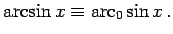
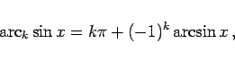
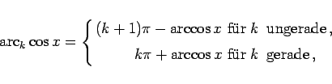
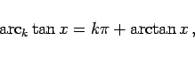
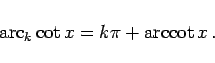
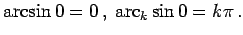
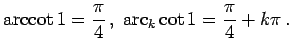
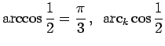
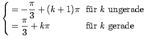

Inhalt Index DeskTop Bronstein

 Funktionen und ihre Darstellung Zyklometrische Funktionen (Arkusfunktionen)
Funktionen und ihre Darstellung Zyklometrische Funktionen (Arkusfunktionen)


Die Arkusfunktionen haben in den Definitions- und Wertebereichen für k=0 ihren sogenannten Hauptwert, der ohne den Index k geschrieben wird, z.B.  In der folgenden Abbildung sind die Hauptwerte der Arkusfunktionen eingezeichnet.
Hinweis: Taschenrechner geben die Hauptwerte an. Die Zurückführung auf den Hauptwert erfolgt mit Hilfe der folgenden Formeln:
|  | (2.133a) |
|  | (2.133b) |
|  | (2.133c) |
|  | (2.133d) |
| Beispiel A |
|
 |
| Beispiel B |
|
 |
| Beispiel C |
|
  |